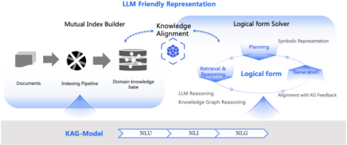
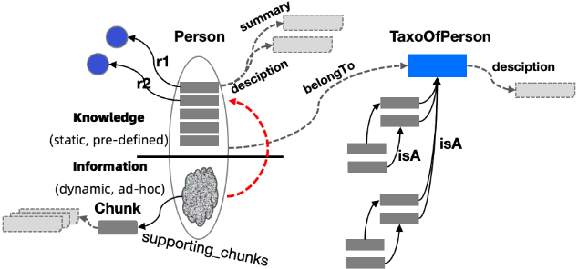
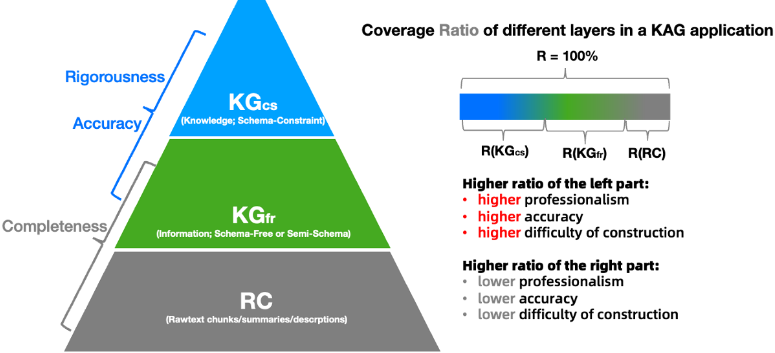
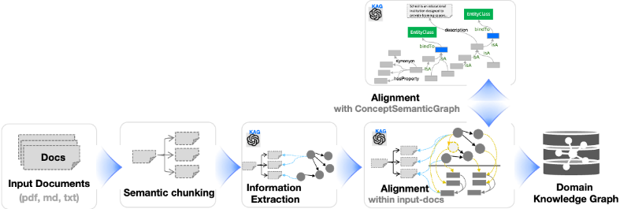
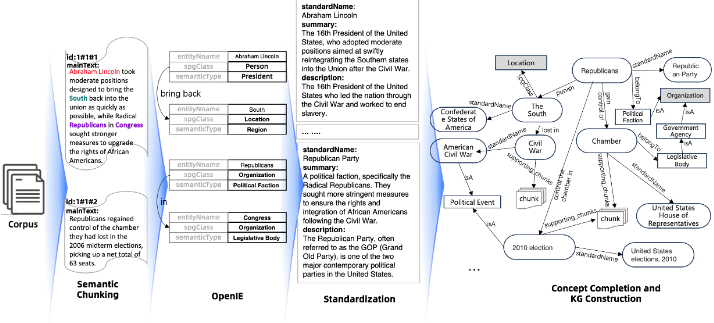
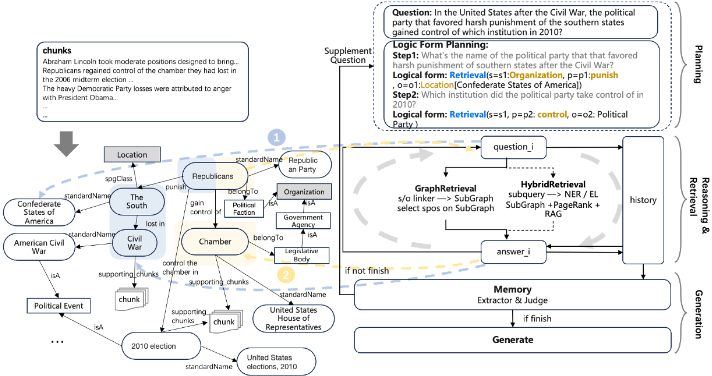
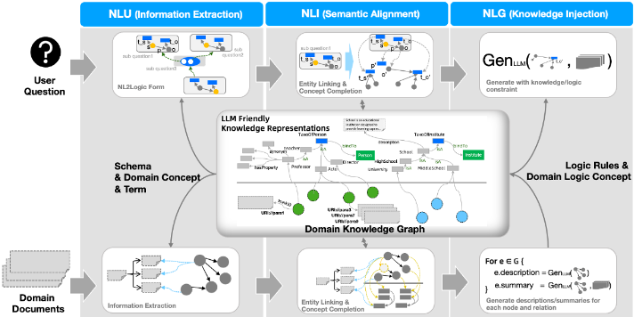
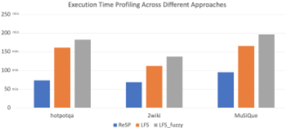
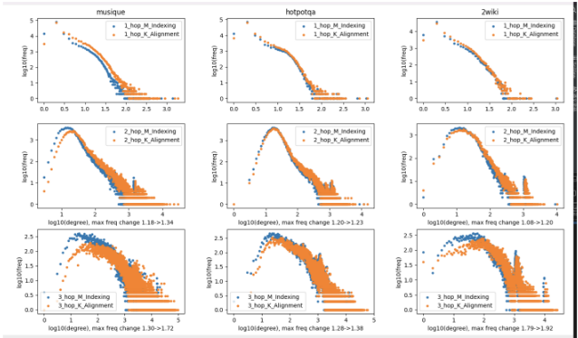

KAG：通过知识增强生成（Knowledge Augmented Generation）提升 LLM 在专业领域的表现
论文针对 RAG 在专业领域知识服务中的两大缺陷——向量相似度与知识推理相关性之间的鸿沟、对数值/时序/专家规则等知识逻辑不敏感——提出知识增强生成框架 KAG。方法上将知识图谱（KG）与向量检索双向结合：通过 LLMFriSPG 分层知识表示、KG 与文本 chunk 互索引、逻辑形式（Logical Form）引导的混合推理引擎（含基于反思与全局记忆的多轮求解）、概念图语义对齐以及 KAG-Model 模型能力增强五个模块协同。在 HotpotQA、2WikiMultiHopQA、MuSiQue 三个多跳问答基准上，KAG 相比 HippoRAG 等 SOTA 方法 F1 显著提升（HotpotQA 相对提升 19.6%、2wiki 提升 33.5%），并已在蚂蚁集团 E-Government 与 E-Health 问答场景落地，专业性与准确率明显优于传统 RAG。对团队而言，这是一套经过生产验证的 RAG/上下文组织与混合检索参考方案。
RAG 依赖文本/向量相似度检索，存在向量相似度与知识推理相关性之间的鸿沟，对数值、时序关系、专家规则等知识逻辑不敏感；在多跳与跨段落任务中检索结果不完整、重复，生成文本缺乏连贯性与逻辑性，难以满足法律、医疗、政务等专业领域对分析推理与知识严谨性的要求。
提出 KAG 框架，由 KAG-Builder（离线索引）、KAG-Solver（在线求解）、KAG-Model（模型能力增强）三部分组成：(1) LLMFriSPG 知识表示，将知识划分为知识层 KGcs、图信息层 KGfr 与原始 chunk 层 RC，支持 schema 约束的静态属性与动态属性共存；(2) 互索引（mutual-indexing）机制，在知识结构与文本 chunk 间建立双向索引（supporting_chunks、summary、description），结合兼顾上下文窗口约束与语义连贯的语义分块，以及领域概念/术语注入的抽取提示；(3) 逻辑形式引导的混合推理引擎，将问题分解为 Retrieval/Sort/Math/Deduce/Output 等逻辑函数，结合 KG 结构检索与向量混合检索，并基于反思与全局记忆进行多轮迭代求解；(4) 知识对齐，利用概念图进行实例标准化、实例-概念链接、语义关系补全以增强索引与检索；(5) KAG-Model，通过指令重构增强 NLU、概念推理数据增强 NLI、K-Lora 与 AKGF（KG 反馈对齐）增强 NLG，以及 OneGen 在一次前向中统一检索与生成。
相比 HippoRAG，KAG 在 HotpotQA、2WikiMultiHopQA、MuSiQue 上 F1 分别相对提升 19.6%、12.2%、12.5%（摘要表述为 HotpotQA 相对提升 19.6%、2wiki 提升 33.5%）
相比 IRCoT + HippoRAG（DeepSeek-V2 API 为骨干），EM 在 HotpotQA、2WikiMultiHopQA、MuSiQue 上分别提升 11.5%、19.8%、10.5%，F1 分别提升 12.5%、19.1%、12.2%
知识对齐（K_Alignment）使 CRref3 的 Top-5 Recall 分别提升 9.2%、28.4%、9.5%，平均提升 15.7%
LFSHref3 相比 CRref3 的 Top-5 Recall 提升 15%、32.2%、12.7%，平均提升 19.9%；LFSref3 相比 LFSHref3 计算时间减少 12%、22%、18%，F1 分别下降 2.2%、0.1%、0.5%
E-Health 场景：评测集上召回率 60.67%、精确率 81.32%；医保政策问答准确率 77.2%，科普意图准确率超 94%，指标解读意图准确率超 93%
E-Government 场景：KAG 在完整性与准确性上均显著优于 NaiveRAG（正文未给出具体数值）
OneGen 统一检索与生成，相比 Self-RAG 在 Pub 数据集提升 3.1pt、ARC 数据集提升 2.8pt
KAG-Model 微调 qwen2、llama2、baichuan2、llama3、mistral、phi3 六个基座模型，在 OpenCompass 六项 NLU 基准上显著提升；KAG-llama 在 SemEval2018-Task9 Hypernym Discovery（MRR）上显著优于 Llama3 与 ChatGPT-3.5
相比 GraphRAG、HippoRAG 等仅用 OpenIE 抽取信息图结构的方法，KAG 引入 LLMFriSPG 分层知识表示（数据-信息-知识）、KG 与文本 chunk 的互索引、基于概念图的语义对齐来增强信息到知识的转换；相比传统 KBQA 语义解析方法（如生成 S-expression），采用多步分解的逻辑形式统一 SPO 与 chunk 的集成检索，实现 LLM 推理、知识推理与数学逻辑推理的混合求解，并通过 KAG-Model 实现 LLM 与 KG 的双向增强。
相关度级别：high
命中能力域：3.1 上下文工程与记忆 | 3.3 Agent 架构与工具使用 | 3.5 评测与可靠使用
理由：论文核心是 RAG/检索增强与结构化上下文组织（分层知识表示、KG 与 chunk 互索引、语义分块），直接命中 3.1 的核心技术；其 Logical Form Solver 包含问题分解、规划、反思与全局记忆的多轮求解机制，并显式利用 LLM 的 planning 与 function calling 能力执行确定性推理（数值计算、集合运算），与 3.3 的规划反思与单 Agent 执行可靠性相关；论文在三个多跳 QA 基准上做了系统评测与消融，并量化分析 token 开销与计算时间等成本问题，与 3.5 的评测方法与成本效率优化相关。团队的知识库问答、文档与测试辅助等场景可直接借鉴其互索引与混合检索方案。
建议动作：深入精读并做内部分享
arXiv:2409.13731v3 [cs.CL] 26 Sep 2024
KAG：通过知识增强生成提升大语言模型在专业领域的能力
Lei Liang ∗, 1, Mengshu Sun ∗, 1, Zhengke Gui ∗, 1, Zhongshu Zhu 1, Ling Zhong 1, Peilong Zhao 1, Zhouyu Jiang 1, Yuan Qu 1, Zhongpu Bo 1, Jin Yang 1, Huaidong Xiong 1, Lin Yuan 1, Jun Xu 1, Zaoyang Wang 1, Zhiqiang Zhang 1, Wen Zhang 2, Huajun Chen 2, Wenguang Chen 1, Jun Zhou †, 1
{leywar.liang, mengshu.sms, zhengke.gzk, jun.zhoujun}@antgroup.com
1 蚂蚁集团知识图谱团队， 2 浙江大学
最近发展的检索增强生成（Retrieval-Augmented Generation, RAG）技术使得领域专用应用的高效构建成为可能。然而，它也存在局限性，包括向量相似度与知识推理相关性之间的差距，以及对数值、时间关系、专家规则等知识逻辑的不敏感性，这些因素阻碍了专业知识服务的有效性。在本工作中，我们提出了一种名为知识增强生成（Knowledge Augmented Generation, KAG）的专业领域知识服务框架。KAG 旨在解决上述挑战，其动机是充分利用知识图谱（Knowledge Graph, KG）与向量检索的优势，通过五个关键方面双向增强大语言模型（Large Language Model, LLM）与知识图谱，从而提升生成与推理性能：（1）LLM 友好的知识表示；（2）知识图谱与原始文本块之间的互索引；（3）逻辑形式引导的混合推理引擎；（4）基于语义推理的知识对齐；（5）面向 KAG 的模型能力增强。我们在多跳问答任务中将 KAG 与现有 RAG 方法进行了比较，发现其显著优于最先进的方法，在 F1 分数上于 hotpotQA 取得 19.6% 的相对提升，在 2wiki 上取得 33.5% 的相对提升。我们已成功将 KAG 应用于蚂蚁集团的两个专业知识问答任务，包括政务问答（E-Government Q&A）和医疗问答（E-Health Q&A），与 RAG 方法相比在专业性方面取得了显著提升。此外，我们即将在开源知识图谱引擎 OpenSPG 上原生支持 KAG，使开发者能够更轻松地构建严谨的知识决策或便捷的信息检索服务。这将促进 KAG 的本地化发展，使开发者能够以更高的准确性和效率构建领域知识服务。
近年来，快速发展的检索增强生成（Retrieval-Augmented Generation，RAG）[1, 2, 3, 4, 5]技术在使大型语言模型（Large Language Models，LLMs）具备获取领域特定知识的能力方面发挥了重要作用。这是通过借助外部检索系统实现的，从而显著减少了答案幻觉的发生，并能够高效地构建特定领域的应用。为了提升 RAG 系统在多跳（multi-hop）和跨段落任务中的性能，以强大推理能力著称的知识图谱被引入 RAG 技术框架中，包括 GraphRAG[6]、DALK[7]、SUGRE[8]、ToG 2.0[9]、GRAG[10]、GNN-RAG [11] 和 HippoRAG[12]。
1 , *：这些作者对本工作贡献相同。
2 , †：通讯作者。
尽管 RAG 及其优化方法已经解决了大部分由领域特定知识和实时更新信息缺失所导致的幻觉问题，但生成的文本仍然缺乏连贯性和逻辑性，致使其无法给出正确且有价值的答案，尤其是在法律、医学和科学等分析推理至关重要的专业领域。这一缺陷可归结为三个主要原因。首先，现实世界的业务流程通常需要基于知识片段之间的特定关系进行推理，以收集与回答问题相关的信息。然而，RAG 通常依赖文本或向量的相似性来检索参考信息，这可能导致检索结果不完整且重复。其次，现实世界的流程往往涉及逻辑推理或数值推理，例如判断一组数据在时间序列中呈上升还是下降趋势，而语言模型所采用的下一个词元预测（next token prediction）机制在处理此类问题时仍较为薄弱。
相比之下，可以采用知识图谱（KG）的技术方法来解决这些问题。首先，KG 采用显式语义来组织信息，其基本知识单元是 SPO 三元组，由实体及实体之间的关系构成[13]。实体具有明确的实体类型以及关系。含义相同但表述不同的实体可以通过实体归一化加以统一，从而减少冗余并增强知识之间的互联性[14]。在检索过程中，使用查询语法（如 SPARQL[15] 和 SQL[16]）能够显式指定实体类型，缓解同名或相似实体带来的噪声，并且可以基于查询需求指定关系来进行推理式知识检索，而不是盲目扩展到相似却关键的相邻内容。同时，由于知识图谱的查询结果具有显式语义，它们可以用作具有特定含义的变量。这使得大语言模型（LLM）的规划与函数调用能力能够得到进一步利用[17]，即将检索结果作为变量代入函数参数，以完成数值计算和集合运算等确定性推理。
为应对上述挑战并满足专业领域知识服务的需求，我们提出了知识增强生成（KAG），它充分发挥了 KG 与检索增强生成（RAG）技术的互补特性。它不仅仅是将图结构集成到知识库流程中，还将知识图谱的语义类型与关系，以及知识图谱问答（KGQA）中常用的逻辑形式（Logical Forms）纳入检索与生成过程。如图 1 所示，该框架涉及对以下五个模块的优化：
阶段，使通过自动化方式生成的碎片化知识能够借助领域知识实现对齐与关联。在离线索引阶段，它能够提升知识的标准化程度与连通性；而在在线问答阶段，它能够准确地充当用户问题与索引之间的桥梁。
我们在三个复杂的问答数据集上评估了该系统的有效性：2WikiMultiHopQA[18]、MuSiQue[19] 和 HotpotQA[20]。评估同时关注端到端问答性能与检索有效性。实验结果表明，与 HippoRAG[12] 相比，KAG 在全部三个任务上均取得了显著提升，F1 分数分别提高了 19.6%、12.2% 和 12.5%。此外，各项检索指标也表现出显著改进。
KAG 已应用于蚂蚁集团内部的两个专业问答场景：政务问答（E-Government）和医疗问答（E-Health）。在政务问答场景中，它基于给定的文档库回答用户关于行政流程的问题。在医疗问答方面，它利用所提供的医疗资源，回应与疾病、症状、治疗相关的咨询。实际应用结果表明，KAG 的准确率显著高于传统 RAG 方法，从而提升了专业领域问答应用的可信度。我们即将在开源知识图谱（KG）引擎 OpenSPG 上原生支持 KAG，使开发者能够更轻松地构建严谨的知识决策服务或便捷的信息检索服务。
总而言之，我们提出了一种面向专业问答场景的知识增强技术框架 KAG，并基于复杂问答任务验证了该框架的有效性。我们展示了基于蚂蚁集团业务场景的两个行业应用案例，并已开源相关代码，以协助开发者使用 KAG 构建本地应用。
在本节中，我们将首先介绍 KAG 的总体框架，然后在 2.1 节至 2.5 节中讨论五项关键增强。如图 1 所示，KAG 框架由三部分组成：KAG-Builder、KAG-Solver 和 KAG-Model。KAG-Builder 用于构建离线索引；在该模块中，我们提出了一种对大语言模型（LLM）友好的知识表示框架，以及知识结构与文本块之间的互索引。在 KAG-Solver 模块中，我们引入了一种逻辑形式引导的混合推理求解器，它集成了 LLM 推理、知识推理和数学逻辑推理。此外，还利用基于语义推理的知识对齐来提升 KAG-Builder 和 KAG-Solver 中知识表示与检索的准确性。KAG-Model 在通用语言模型的基础上优化各模块所需的能力，从而提升所有模块的性能。
为了给 LLM 定义一种更加友好的知识语义表示，我们从三个方面对 SPG 进行了升级：深层文本-上下文感知、动态属性与知识分层，并将其命名为 LLMFriSPG。
其中，M 表示 LLMFriSPG 中定义的所有类型，T 表示所有 EntityType（例如图 2 中的 Person）、EventType 类以及所有与 LPG 语法声明兼容的预定义属性。C 表示所有 ConceptType 类、概念及概念关系；值得注意的是，每棵概念树的根节点都是一个与 LPG 语法兼容的 ConceptType 类（例如图 2 中的 TaxoOfPerson），且每个概念节点都拥有唯一的 ConceptType 类。ρ 表示从实例到概念的归纳关系。L 表示定义在逻辑关系和逻辑概念上的所有可执行规则。对于 ∀ t ∈ T：


如图 2 所示，其中，pt 表示类型 t 的所有属性和关系，p c t 表示领域专家预先定义的部分，p f t 表示以临时方式添加的部分，p b t 表示系统内置属性，例如 supporting_chunks、descripiton、summary 和 belongTo。对于任意实例 ei，将 typeof ( ei ) 记为 t k，supporting_chunks 表示包含实例 ei 的所有文本块的集合，用户在 KAG builder 阶段定义文本块生成策略和文本块的最大长度，description 表示特定于类 t k 的一般性描述信息。值得注意的是，添加到类型 t k 和实例 ei 上的 description 含义有所不同：当 description 附加于 t k 时，它表示该类型的全局描述；反之，当它与实例 ei 关联时，它表示与原始文档上下文一致的 ei 的一般性描述信息。description 能够有效辅助 LLM 理解特定实例或类型的精确含义，并可用于信息抽取、实体链接和摘要生成等任务。summary 表示 ei 或 r j 在原始文档上下文中的摘要。belongTo 表示从实例到概念的归纳语义。每个 EntityType 或 EventType 都可以通过 belongTo 与一个 ConceptType 相关联。值得注意的是：1) T 和 C 具有不同的功能。语句 t 采用面向对象原则，以更好地匹配 LPG[21] 的表示，而 C 则由基于文本的概念树进行管理。本文不会详细介绍 SPG 的语义。2) p c t 和 p f t 可以分别实例化。也就是说，它们共享相同的类声明，但在实例存储空间中，预先定义的静态属性与实时添加的动态属性可以共存，我们也支持仅实例化其中之一。这种方式能够更好地平衡专业决策与信息检索两类应用场景。一般信息检索场景主要实例化动态属性，而专业决策应用场景主要实例化静态属性。用户可以根据业务场景需求在易用性与专业性之间取得平衡。3) p c t 和 p f t 共享相同的概念术语。概念是独立于特定文档或实例的一般性常识知识。不同的实例链接到同一概念节点，从而达到对实例进行分类的目的。我们可以通过概念图实现 LLM 与实例之间的语义对齐，概念还可以用作知识检索的导航。详细信息见第 2.4 节和第 2.3 节。

为了更准确地定义信息和知识的层次化表示，如图 3 所示，我们将 KGcs 表示为知识层（knowledge layer），它表示符合领域模式约束、并经过总结、整合与评估的领域知识；将 KGfr 表示为图信息层（graph information layer），它表示通过信息抽取获得的实体和关系等图数据；将 RC 表示为原始文本块层（raw chunks layer），它表示经过语义切分后的原始文档文本块。KGcs 层完全符合 SPG 语义规范，支持在严格模式约束下进行知识构建和逻辑规则定义，SPG 要求领域知识必须具有预定义的模式约束。它具有较高的知识准确性和逻辑严谨性。然而，由于其严重依赖人工标注，构建的人力成本相对较高，且信息完备性不足。KGfr 与 KGcs 共享相同的 EntityTypes、Eventtypes 和 Conceptual system，并为 KGcs 提供有效的信息补充。同时，在 KGfr 与 RC 之间构建的 supporting_chunks、summary 和 description 边形成了基于图结构的倒排索引，使 RC 成为 KGfr 有效的原文上下文补充，并具有较高的信息完备性。如图 3 右侧所示，在特定的领域应用中，R ( KGcs )、R ( KGfr ) 和 R ( RC ) 分别表示它们在解决目标领域问题时的知识覆盖范围。如果应用对知识准确性和逻辑严谨性有更高要求，则需要构建更多的领域结构化知识，并消耗更多专家人力，以提高 R ( KGcs ) 的覆盖率。相反，如果应用对检索效率有更高要求，且能够容忍一定程度的信息丢失或错误，则需要提高 R ( KGfr ) 的覆盖率，以充分利用 KAG 的自动化知识构建能力并减少专家人力消耗。

As illustrated in Figure 4, KAG-Builder consists of three coherent processes: structured information acquisition, knowledge semantic alignment and graph storage writer. The main goals of this module include: 1) building a mutual-indexing between the graph structure and the text chunk to add more descriptive context to the graph structure, 2) using the concept semantic graph to align different knowledge granularities to reduce noise and increase graph connectivity.
根据文档的结构层级以及段落之间固有的逻辑联系，基于系统内置提示（prompt）实现了语义分块（semantic chunking）过程。这种语义分块所产生的块（chunk）既满足长度约束（特别是大语言模型（LLM）的上下文窗口大小约束），又保持语义连贯，从而确保每个块内的内容在主题上紧密聚合。我们在 RC 中定义了 Chunk EntityType，其中包含 id、summary、mainText 等字段。语义分割后得到的每个块都会被写入一个 Chunk 实例，其中 id 是一个复合字段，由 articleID、paraCode、idInPara 按顺序用连接符 # 拼接而成，以确保连续的块在 id 空间中彼此相邻。articleID 表示全局唯一的文章 ID，paraCode 表示文章中的段落编号，idInPara 是段落中每个块的顺序编号。因此，内容上的相邻关系对应于其标识符上的顺序相邻关系。此外，还在原始文档与其分割后的块之间建立并维护了一种双向关联关系，以便于在不同粒度的文档内容之间进行导航和上下文理解。这种结构化的分割方法不仅优化了与大规模语言模型的兼容性，还保留并增强了文档固有的语义结构和关联关系。
给定一个数据集，我们使用免微调的大语言模型（LLM）（例如 GPT-3.5、DeepSeek、QWen 等）或我们微调得到的模型 Hum 来抽取实体、事件、概念和关系以构建 KGfr，随后构建 KGfr 与 RC 之间的互索引结构，从而通过实体和关系实现跨文档链接。该过程包括三个步骤：首先，逐块抽取实体集 E = { e 1 , e 2 , e 3 , ... }；其次，抽取与所有实体相关联的事件集 EV = { ev 1 , ev 2 , ev 3 , ... }，并迭代地抽取 E 中所有实体之间的关系集 R = { r 1 , r 2 , r 3 , ... }；最后，补全实例与其 spgClass 之间的所有上位词（hypernym）关系。为了给后续的知识对齐（Knowledge Alignment）阶段提供更多便利，并克服 Wikidata[22] 和 ConceptNet[23] 等知识短语区分度低的问题，在实体抽取阶段，我们使用 LLM 一次性为每个实例 e 默认生成内置属性 description、summary、semanticType、spgClass、descripitonOfSemanticType，如图 2 所示，我们按照 e.description、e.summary、<e, belongTo, semanticType> 和 <e, hasClass, spgClass> 的结构将它们存储在 e 实例存储中。
6

KAG 的互索引（mutual-indexing）是一种符合 LLMFriSPG 语义表示的知识管理与存储机制。如 2.1 节所述，它包含四种核心数据结构：1) 共享模式（Shared Schema）是在项目层级预定义为 SPG Class 的粗粒度类型，包括 EntityType、ConceptType 和 EventType，它们充当高层分类，例如 Person、Organization、GEOLocation、Date、Creature、Work、Event。2) 实例图（Instance Graph）包含 KGcs 和 KGfr 中的所有事件实例和实体实例，也就是说，通过 openIE 以无模式（schema-free）方式构建的实例，以及通过带模式约束（schema-constraint）的结构化抽取得到的实例，都会作为实例存储在 KG 存储中。3) 文本块（Text Chunk）是符合 Chunk EntityType 定义的特殊实体节点。4) 概念图（Concept Graph）是知识对齐的核心组件，它由一系列概念和概念关系组成，概念节点同时也是实例的细粒度类型。通过关系预测，实例节点可以链接到概念节点，从而获得其细粒度语义类型。此外还包含两种存储结构：1) KG Store（知识图谱存储），将 KG 数据结构存储在标签属性图（LPG）数据库中，例如 TuGraph、Neo4J。2) Vector Store（向量存储），将文本和向量存储在向量存储引擎中，例如 ElasticSearch、Milvus，或 LPG 引擎中内嵌的向量存储。
1 SPG 官方网站：https://spg.openkg.cn/en-US
7
In the process of solving complex problems, three key steps are involved: planning, reasoning and retrieval . Disassembling question is a planning process to determine the next problem to be tackled. Reasoning includes retrieving information based on the disassembled question, inferring the answer to the question according to the retrieved results, or re-disassembling the sub-question when the retrieved content cannot answer the question. Retrieval is to find the content that can be used as reference for the original question or the disassembled sub-question. Since interactions between
Algorithm 1 Logical Form Solver 1: memory ← [] 2: querycur ← query 3: for round ∈ ( 0 , n ) do 4: l f list ← LFPlanner( querycur ) 5: history ← [] 6: for l f ∈ l f list do 7: l f subquery , l f f unc ← l f 8: retrievalssub , answersub ← Reasoner( l f subquery , l f f unc ) 9: history . append ([ l f subquery , retrievalssub , answersub ]) 10: end for 11: memory ← Memory( query , history ) 12: if not Judge( query , memory ) then 13: querycur ← SupplyQuery( query , memory ) 14: end if 15: end for 16: answer ← Generator( query , memory ) 17: return answer
different modules in traditional RAG are based on vector representations of natural language, inaccuracies often arise. Inspired by the logical forms commonly used in KGQA, we designed an executable language with reasoning and retrieval capabilities. This language breaks down a question into multiple logical expressions, each of which may include functions for retrieval or logical operations. The mutual indexing described in Section 2.2 makes this process possible. Meanwhile, we designed a multi-turn solving mechanism based on reflection and global memory, inspired by ReSP[26]. The KAG solving process, as referenced in Figure 6 and Algorithm 17, first decomposes the current question querycur into a list of subquestions l f list represented in logical form, and performs hybrid reasoning to solve them. If an exact answer can be obtained through multi-hop reasoning over structured knowledge, it returns the answer directly. Otherwise, it reflects on the solution results: storing the answers and retrieval results corresponding to l f list in global memory and determining whether the question is resolved. If not, it generates supplementary questions and proceeds to the next iteration. Section 2.3.1, 2.3.2 and 2.3.3 introduce logical form function for planning, logical form for reasoning and logical form for retrieval respectively. In general, the proposed logical form language has the following three advantages:
8

图 6：逻辑形式执行的一个示例。在此图中，左侧的 KG 构建过程如图 5 所示，右侧展示了整体的推理与迭代过程。首先，基于用户的总体问题进行逻辑形式分解，然后使用逻辑形式引导的推理进行检索和推理。最后，Generation 判断是否已满足用户的问题。如果不满足，则提供一个新的问题，进入新一轮的逻辑形式分解与推理过程。如果确定已满足，Generation 直接输出答案。
表 13 展示了一个与伪代码 17 一致的多轮场景。尽管第一轮无法确定瘟疫发生的确切次数，但提取到的信息表明：“威尼斯是安东尼奥·维瓦尔第（Antonio Vivaldi）的出生地，曾经历毁灭性的黑死病，也称大瘟疫。这场由鼠疫耶尔森菌（Yersinia pestis）引起的大流行在欧亚大陆造成 7500 万至 2 亿人死亡，并于 1347 年至 1351 年在欧洲达到高峰。这场瘟疫给欧洲带来了巨大的动荡。尽管威尼斯的具体发生记录并未详述，但显然该城市在 14 世纪中叶受到了影响。”。如表 13 所示，经过两次迭代后，确定的答案为：22 次。
Logical Functions are defined as Table 1, with each function representing an execution action. Complex problems are decomposed by planning a combination of these expressions, enabling reasoning about intricate issues.
| Function Name | Function Declaration |
|---|---|
| Retrieval | Retrieval ( s = s i : type [ name ] , p = p i : edge , o = o i : type [ name ] , s . prop = value , p . prop = value , o . prop = value ) |
| Sort | Sort ( A , direction = min |
| Math | math i = Math ( expr ) , expr is in LaTeX syntax and can be used to perform operations on sets. e.g. count: ∥ A ∥ , sum: ∑ A |
| Deduce | Deduce ( le f t = A , right = B , op = entailment |
| Output | Output ( A , B , ... ) |
| Function Name | Function Declaration |
Retrieval . According to the the knowledge or information retrieved from SPO, s, p, o should not repeatedly appear multiple times in the same expression. Constraints can be applied to the s, p, o for querying. For multi-hop queries, multiple retrievals are required. When the current variable refers to a previously mentioned variable, the variable name must be consistent with the referenced variable name, and only the variable name needs to be provided. The knowledge type and name are only specified during the first reference.
9
Sort . Sort the retrieved results. A is the variable name for the retrieved subject-predicateobject(SPO) ( si , oi , or s . prop , p . prop , o . prop ). direction specifies the sorting direction, where direction = min means sorting in ascending order and direction = max means sorting in descending order. limit = n indicates outputting the topN results.
Math . Perform mathematical calculations. expr is in LaTeX syntax and can be used to perform calculations on the retrieved results (sets) or constants. mathi represents the result of the calculation and can be used as a variable name for reference in subsequent actions.
Deduce . Deduce the retrieval or calculation results to answer the question. A , B can be the variable names from the retrieved SPO or constants. The operator op = entailment | greater | less | equal represents A entails B , A is greater than B , A is less than B , and A is equal to B , respectively.
当将由自然语言表示的查询语句应用于搜索时，其逻辑往往是模糊的，例如“查找包含蔬菜或水果的图片”和“查找包含蔬菜和水果的图片”。无论采用文本搜索还是向量搜索，这两个查询之间的相似度都非常高，但对应的答案却大相径庭。对于涉及 and、or、not 等逻辑推理过程以及交集、差集运算的问题同样如此。为此，我们使用逻辑形式来表达问题，使其能够表达显式的语义关系。类似于 IRCOT，我们对复杂的原始问题进行分解，并规划出多步检索、数值推理、逻辑推理和语义推导等多种执行动作。每个子问题均使用逻辑形式函数来表达，子问题之间的依赖关系则通过变量引用来建立。每个子问题的推理求解过程如 Algorithm 9 所示。在此过程中，GraphRetrieval 模块根据逻辑形式子句执行知识图谱（KG）结构检索，以获得结构化的图结果。另一个关键模块 HybridRetrieval 则将自然语言表达的子问题与逻辑函数相结合，对文档和子图信息进行综合检索。要理解如何利用逻辑函数对复杂问题进行推理，请参阅 Table 14 中给出的以下示例。
Output。直接输出 A、B、... 作为答案。A 和 B 均为变量名，用于引用先前检索或计算得到的
̸
在朴素 RAG 中，检索通过计算问题与文档分块的嵌入向量之间的相似度（例如余弦相似度）来实现，其中嵌入模型的语义表示能力起着关键作用。这主要包括稀疏编码器（BM25）和稠密检索器（采用 BERT 架构的预训练语言模型）。稀疏与稠密嵌入方法捕获不同的相关性特征，并可通过利用互补的相关性信息而相互受益。
10
现有的将两者结合的方法通常是以集成的方式组合两种搜索方法的得分，但在实践中，不同的搜索方法可能适用于不同的问题，尤其是需要多跳推理的问题。当查询涉及专有名词、人物、地点、时间、数字和坐标时，预训练表示模型的表示能力有限，因而需要更精确的文本索引。而对于更接近一段文本表达的查询，例如场景、行为和抽象概念，两者在某些问题上可能相互耦合。
在逻辑形式的设计中，将两种检索方法有效地结合起来是可行的。当需要将关键词信息作为显式过滤条件时，可以在检索函数内指定选择条件，从而实现结构化检索。
例如，对于查询“在杭州西湖申请残疾证需要哪些材料？”，检索函数可以表示为："Retrieval(s=s1:Event[applying for a disability certificate], p=p1:support_chunks, o=o1:Chunk, s.location=West Lake, Hangzhou)"。这种方法利用建立不同的索引（稀疏或稠密）来按需实现精确搜索或模糊搜索。
此外，当 SPO 形式的结构化知识无法通过逻辑函数检索时，可以采用其他方法。这些方法包括半结构化检索（即使用逻辑函数在信息分块中进行搜索）和非结构化检索。后者涵盖诸如检索增强生成（RAG）等方法，其中使用以自然语言表达的子问题来检索相关的文本分块。这凸显了系统能够根据信息的可用性和性质灵活运用不同检索策略的适应能力。
通过信息抽取构建知识图谱（KG）索引以及基于向量相似度的检索，在知识对齐方面存在三个显著缺陷：
为解决这些问题，我们提出了一种解决方案，利用概念图通过语义推理来增强离线索引和在线检索。这涉及诸如知识实例标准化、实例到概念的链接、语义关系补全以及领域知识注入等任务。如 2.2.2 节所述，我们在抽取阶段为每个实例、概念或关系添加了描述性文本信息，以增强其可解释性和上下文相关性。同时，如 2.2.3 节所述，KAG 支持注入领域概念和术语知识，以减少垂直领域中因知识粒度不匹配而导致的噪声问题。概念推理的目标是在前述知识结构的基础上，充分利用向量检索和概念推理来补全概念关系，从而提升领域 KG 的准确性和连通性。参考 SPG 概念语义的定义 2，如表 2 所示，我们总结了检索与推理中常用的六种语义关系。此外，可根据实际场景的具体需求添加其他语义关系。
2 概念的语义分类：https://openspg.yuque.com/ndx6g9/ps5q6b/fe5p4nh1zhk6p1d8
11
| Formal Expression | Description | Example |
|---|---|---|
| <var1, synonym, var2> | A synonym relation means that a word or phrase var2 that has the same or nearly the same meaning as another word or phrase var1 in the same language and given context. | Fast is a synonym of quick . |
| <var1, isA, var2> | An isA relation means that a hypernym var2 that is more generic or abstract than a given word or phrase var1 and encompasses a broader category that the given word belongs to. | Car isA Vehicle . |
| <var1, isPartOf, var2> | An isPartOf relation means that something var1 is a component or constituent of something var2 larger. This relation shows that an item is a part of a bigger whole. | Wheel isPartOf car . |
| <var1, contains, var2> | A contains relation means that something var1 includes or holds var2 , something else within it. This indicates that one item has the other as a subset or component. | Library contains books . |
| <var1, belongTo, var2> | An belongTo relation means that something var1 is an instance of concept var2 . | Chamber belongTo Legislative Body . |
| <var1, causes, var2> | A causes relation means that one event or action var1 brings about another var2 . This indicates a causal relation where one thing directly results in the occurrence of another. | Fire causes smoke . |
| Formal Expression | Description | Example |
如图 5 所示，通过语义推理增强索引的过程，具体实现为利用 LLM 预测索引项之间的语义关系或相关知识元素，涵盖以下四种策略：
在检索阶段，我们利用语义关系推理，基于逻辑形式中的短语和类型来搜索 KG 索引。对于逻辑形式中的类型、提及或关系，我们采用将语义关系推理与相似性检索相结合的方法，以取代传统的相似性检索方法。这种检索方法使检索路径专业且合乎逻辑，从而获得正确答案。首先，混合推理执行精确的类型匹配和实体链接。如果类型匹配失败，则执行语义推理。如图 6 所示，如果类型 Political Party 匹配失败，则利用语义推理预测 Political Party 包含 Political Faction，并从 Political Faction 出发进行推理或路径计算。
12
再举一个例子。假设用户查询 q 1 为“白内障患者可以去哪些公共场所休闲？”，而文档内容 d 2 为“博物馆配备了设施，为视障人士提供触摸、语音讲解、全自动导览等无障碍参观体验服务”，那么仅凭 q 1 与 d 2 之间的向量相似度几乎不可能检索到 d 2。然而，通过语义关系 <cataract patient, isA, visually impaired> 则更容易检索到 d 2。
KAG 包含两个主要计算过程：离线索引构建和在线查询与答案生成。在小语言模型时代，这两项任务通常由两条相互独立的流水线处理，每条流水线包含多个面向特定任务的自然语言处理（NLP）模型。这导致应用系统复杂度高、搭建成本增加，并且由于模块之间的误差传播而不可避免地产生级联损失。相比之下，大语言模型作为一种能力复合体，有可能将这些流水线整合为统一的、同步的端到端推理过程。
如图 7 所示，索引与问答（QA）过程各自包含相似的步骤。这两条流水线都可以抽象为分类（classify）、提及检测（mention detection）、提及关系检测（mention relation detection）、语义对齐（semantic alignment）、嵌入（embedding），以及分块（chunk）、实例（instance）或面向查询的摘要（query-focused summary）。其中，分类、提及检测和提及关系检测可归入自然语言理解（NLU），语义对齐和嵌入可归入自然语言推理（NLI），而分块、实例或面向查询的摘要则可归入自然语言生成（NLG）。因此，我们可以得出结论：RAG 系统所依赖的自然语言处理三大基本能力是 NLU、NLI 和 NLG。
我们重点探索了优化这三种能力的方法，并分别在第 2.5.1、2.5.2 和 2.5.3 小节中予以介绍。此外，为了减少将模型串联为流水线所导致的级联损失，我们进一步探索了将多个推理过程整合为单次推理的方法。第 2.5.4 小节将讨论如何为模型配备检索能力，从而通过单次推理（one-pass inference）实现更好的性能与效率。

13
自然语言理解（NLU）是自然语言处理中最常见的基础任务之一，包括文本分类、命名实体识别、关系抽取、主体与客体抽取、触发词检测、事件论元抽取、事件抽取以及机器阅读理解。我们收集了超过 30 个公开数据集以增强理解能力。实验发现，仅将原始数据集转换为指令数据集，便可在已训练的任务上取得与专用模型相当的结果，但这种方法并不能提升模型在未见领域上的 NLU 能力。因此，我们开展了大规模的指令重构，设计了多种指令合成策略，构建了一个包含超过 20,000 条多样化指令的 NLU 指令数据集。通过利用该数据集对给定的基座模型进行监督微调，模型在下游任务中展现出了更强的 NLU 能力。指令重构策略主要包括以下三种类型。
我们微调了六个基础模型：qwen2、llama2、baichuan2、llama3、mistral、phi3，并使用 OpenCompass 上收录的六个理解类基准测试（benchmark）进行性能验证。表 3 显示，KAG-Model 在 NLU 任务上取得了显著提升。
The NLI task is used to infer the semantic relations between given phrases. Typical NLI tasks include entity linking, entity disambiguation, taxonomy expansion, hypernym discovery , and text entailment . In the context of knowledge base Q&A, due to the diversity and ambiguity of natural language expressions, as well as the subtle and different types of semantic connections between phrases, it often requires further alignment or retrieval of related information through NLI tasks based on NLU. As described in section 2.4, we categorize the key semantic relation in knowledge base applications into six types. Among these, relations such as isA, isPartOf and contains exhibit directional and distance-based partial order relations. During the reasoning process, it is crucial to accurately determine these semantic relations to advance towards the target answer. In traditional approaches, separate training of representation pre-training models and KG completion(KGC) models is often employed to reason about semantic relations. However, these KGC models tend to focus Table 3: Enhancement of natural language understanding capabilities in different LLMs by KAG. The experimental results are based on the open-compass framework and tested using the 'gen' mode. The evaluation metrics for C3, WSC, Lambda, and Race are ACC. XSum and Lcsts are measured using ROUGE-1. Race includes Race-middle and Race-high, and their average is taken.
14
| Models | C3 | WSC | XSum | Lambda | Lcsts | Race | Average |
|---|---|---|---|---|---|---|---|
| GPT4 | 95.1 | 74 | 20.1 | 65.5 | 12.3 | 92.35 | 59.89 |
| Qwen2 | 92.27 | 66.35 | 18.68 | 62.39 | 13.07 | 88.37 | 56.86 |
| KAG Qwen2 | 92.88 | 70.19 | 31.33 | 66.16 | 18.53 | 88.17 | 61.21 |
| Llama2 | 81.7 | 50.96 | 23.29 | 63.26 | 15.99 | 55.64 | 48.47 |
| KAG Llama2 | 82.36 | 63.46 | 24.51 | 65.22 | 17.51 | 68.48 | 53.59 |
| Baichuan2 | 84.44 | 66.35 | 20.81 | 62.43 | 16.54 | 76.85 | 54.57 |
| KAG Baichuan2 | 84.11 | 66.35 | 21.51 | 62.64 | 17.27 | 77.18 | 54.84 |
| Llama3 | 86.63 | 65.38 | 25.84 | 36.72 | 0.09 | 83.76 | 49.74 |
| KAG Llama3 | 83.4 | 62.5 | 26.72 | 54.07 | 18.45 | 81.16 | 54.38 |
| Mistral | 67.29 | 30.77 | 21.16 | 59.98 | 0.78 | 73.46 | 42.24 |
| KAG Mistral | 47.29 | 39.42 | 21.54 | 69.09 | 17.14 | 72.42 | 44.48 |
| Phi3 | 68.6 | 42.31 | 0.6 | 71.74 | 3.47 | 73.18 | 43.32 |
| KAG Phi3 | 85.21 | 25.94 | 0.36 | 71.24 | 15.49 | 74 | 45.37 |
| Models | C3 | WSC | XSum | Lambda | Lcsts | Race | Average |
on learning graph structures and do not fully utilize the essential textual semantic information for semantic graph reasoning. LLMs possess richer intrinsic knowledge, and can leverage both semantic and structural information to achieve more precise reasoning outcomes. To this end, we have collected a high-quality conceptual knowledge base and ontologies from various domains, creating a conceptual knowledge set that includes 8,000 concepts and their semantic relations. Based on this knowledge set, we constructed a training dataset that includes six different types of conceptual reasoning instructions to enhance the semantic reasoning capabilities of a given base model, thereby providing semantic reasoning support for KAG.
Semantic reasoning is one of the core ability required in KAG process, we use NLI tasks and general reasoning Q&A tasks to evaluate the ability of our model, the results are as shown in Table 4 and Table 5. The evaluation results indicates that our KAG-Model demonstrates a significant improvement in tasks related with semantic reasoning: First, Table 5 shows that on the Hypernym Discovery task(which is consistent in form with the reasoning required in semantic enhanced indexing and retrieval.), our fine-tuned KAG-llama model outperforms Llama3 and ChatGPT-3.5 significantly. In addition, the better performance of our model on CMNLI, OCNLI and SIQA compared with Llama3 in Table 4 shows that our model has good capabilities in general logical reasoning.
| Models | CMNLI | OCNLI | SIQA |
|---|---|---|---|
| Llama3 | 35.14 | 32.1 | 44.27 |
| KAG-Llama3 | 49.52 | 44.31 | 65.81 |
| Models | CMNLI | OCNLI | SIQA |
表 4：KAG 对不同大语言模型（LLM）自然语言推理能力的提升。CMNLI、OCNLI、SIQA 的评估指标以准确率（accuracy）衡量。
| 1A.English | 2A.Medical | 2B.Music | |
|---|---|---|---|
| ChatGPT-3.5 | 30.04 | 26.12 | 28.47 |
| Llama3-8B | 23.47 | 24.26 | 18.73 |
| KAG-Llama3 | 38.26 | 55.14 | 30.16 |
| | 1A.English | 2A.Medical | 2B.Music |
表 5：在 SemEval2018-Task9 数据集上的上位词发现（Hypernym Discovery）性能对比，以 MRR 衡量。
未经领域适配训练的模型往往在领域逻辑和写作风格上与目标文本存在显著差异。此外，在专业领域获取足量的标注数据也常常是一项挑战。因此，我们针对特定领域场景建立了两种高效的微调方法，使生成过程能够更好地符合场景预期，即 K-Lora 和 AKGF。
15
基于 K-LoRA 的预学习。首先，我们认为利用知识生成答案是从文本中抽取知识的逆过程。因此，通过将前文所述的抽取过程进行反转，我们可以构建一个“三元组到文本”（triples-to-text）生成任务。通过在大量实例上进行充分的微调，可以训练模型识别由知识图谱（KG）注入的信息格式。此外，由于目标文本是领域特定的，模型能够习得该领域独特的语言风格。再者，考虑到效率，我们继续采用基于 LoRA 的监督微调（SFT）。我们将此步骤中得到的 LoRA 称为 K-LoRA。
基于 KG 反馈的对齐。由于过拟合等问题，模型在回答中仍可能出现幻觉。受基于人类反馈的强化学习（Reinforcement Learning with Human Feedback，RLHF）方法[27, 28]的启发，我们希望让 KG 充当自动评估器，对当前回答的知识正确性提供反馈，从而引导模型进一步优化。首先，我们通过采用多样化的输入格式或随机种子，为每个查询生成多种回答。随后，我们引入 KG 对这些回答进行评分和排序。评分过程将生成的答案与 KG 中的知识进行比较，以确定其正确性。奖励由正确匹配的知识三元组的数量决定。奖励的计算公式由公式 1 表示。
其中，α 为超参数，rspo 表示 SPO 匹配的数量，re 表示实体匹配的数量。
我们选取两个生物医学问答数据集 CMedQA[29] 和 BioASQ[30] 来评估我们的模型。CMedQA 是一个综合性的中文医疗问答数据集，而 BioASQ 是一个英文生物医学数据集。我们从每个数据集中随机选取 1,000 个实例用于测试。对于 CMedQA，我们采用未被选中的问答对的答案文本作为语料，以弱监督方式构建 KG。类似地，对于 BioASQ，我们使用所有提供的参考段落作为领域特定语料。如表 6 所示，实验结果表明生成性能得到了显著提升。有关具体实现过程的更多细节，请参阅我们的论文[31]
| Model. | CMedQA.Rouge-L | CMedQA.BLEU | BioASQ.Rouge-L | BioASQ.BLEU |
|---|---|---|---|---|
| ChatGPT-3.5 0-shot | 14.2 | 1.78 | 21.14 | 5.93 |
| ChatGPT-3.5 2-shot | 14.66 | 2.53 | 21.42 | 6.11 |
| Llama2 | 14.02 | 2.86 | 23.47 | 7.11 |
| KAG Llama2 | 15.44 | 3.46 | 24.21 | 7.79 |
| Model. | CMedQA.Rouge-L | CMedQA.BLEU | BioASQ.Rouge-L | BioASQ.BLEU |
表 6：CMedQA 与 BioASQ 上的性能对比。"CP" 表示“持续预训练”。我们将持续预训练视为一种基础的领域知识注入方法，与其他基于检索的方法处于同等水平。因此，我们不报告混合方法的结果。
大多数检索增强系统由一系列表示模型、检索器和生成模型串联运行，导致系统复杂度高、构建成本高，以及由模块间误差传递造成的不可避免的拼接损失。我们提出了一种高效的单次通过统一生成与检索（OneGen）模型，使任意大语言模型（LLM）能够在单次前向传播中同时完成生成与检索。受大语言模型在文本嵌入方面最新成功的启发，我们通过添加特殊标记（即检索标记）来扩展原始词表，并将检索任务分配给以自回归方式生成的检索标记。在训练过程中，检索标记仅通过对比学习参与表示微调，而其他输出标记则使用语言模型目标进行训练。在推理时，我们按需使用检索标记进行高效检索。与以往需要至少两个模型分别执行检索和生成的流水线方法不同，OneGen 将二者统一在一个模型中，从而无需单独的检索器，并大幅降低了系统复杂度。
16
如表 7 的实验结果所示，我们得出以下结论：(1) OneGen 在 R → G 任务中展现了有效性，且检索与生成的联合训练在 RAG 任务上带来了性能提升。Self-RAG 赋予 LLM 自我评估与自适应检索能力，而 OneGen 则增加了自检索能力。我们的方法在所有数据集上均优于原始的 Self-RAG，尤其在 Pub 数据集上取得了 3.1pt 的提升，在 ARC 数据集上取得了 2.8pt 的提升，验证了联合训练的收益。(2) OneGen 在训练方面非常高效，经过指令微调的 LLM 只需极少的额外调优即可展现出强大的检索能力。它所需的检索数据更少、质量要求更低，仅使用 60K 含噪样本和不完整文档、无需合成数据即可取得相当的性能。有关具体实现过程的更多细节，请参阅文献[32]。
| BackBone | Retriever | Generation Performance.HotpotQA.EM | Generation Performance.HotpotQA.F1 | Generation Performance.2WikiMultiHopQA.EM | Generation Performance.2WikiMultiHopQA.F1 | Retrieval Performance.HotpotQA.Recall@1 | Retrieval Performance.2WikiMultiHopQA.Recall@1 |
|---|---|---|---|---|---|---|---|
| Llama2-7B | Contriever | 52.83 | 65.64 | 70.02 | 74.35 | 73.76 | 68.75 |
| Llama2-7B | self | 54.82 | 67.93 | 75.02 | 78.86 | 75.9 | 69.79 |
| Llama3.1-7B | Contriever | 53.72 | 66.46 | 70.92 | 75.29 | 69.79 | 66.8 |
| Llama3.1-7B | self | 55.38 | 68.35 | 75.88 | 79.6 | 72.55 | 68.98 |
| Qwen2-1.5B | Contriever | 48.55 | 61.02 | 68.32 | 72.66 | 72.41 | 67.7 |
| Qwen2-1.5B | self | 48.75 | 60.98 | 73.84 | 77.44 | 72.7 | 69.27 |
| Qwen2-7B | Contriever | 53.32 | 66.22 | 70.8 | 74.86 | 74.15 | 69.01 |
| Qwen2-7B | self | 55.12 | 67.6 | 76.17 | 79.82 | 75.68 | 69.96 |
| BackBone | Retriever | Generation Performance.HotpotQA.EM | Generation Performance.HotpotQA.F1 | Generation Performance.2WikiMultiHopQA.EM | Generation Performance.2WikiMultiHopQA.F1 | Retrieval Performance.HotpotQA.Recall@1 | Retrieval Performance.2WikiMultiHopQA.Recall@1 |
表 7：在面向多跳问答（Multi-Hop QA）的 RAG 设置下，使用不同 LLM 在不同数据集上的性能比较。
数据集。为评估 KAG 在知识密集型问答（question-answering, QA）任务中的有效性，我们在 3 个广泛使用的多跳问答（Multi-Hop QA）数据集上进行了实验，包括 HotpotQA [20]、2WikiMultiHopQA [18] 和 MuSiQue [19]。为了公平比较，我们遵循 IRCoT [33] 和 HippoRAG [12] 的做法，从每个验证集中选取 1,000 个问题，并使用与所选问题相关的检索语料库。
评估指标。在评估 QA 性能时，我们使用两个指标：精确匹配（Exact Match, EM）和 F1 分数。在评估检索性能时，我们基于 Top 2/5 检索结果计算命中率，分别表示为 Recall@2 和 Recall@5。
对比方法。我们将我们的方法与几种鲁棒且常用的检索型 RAG 方法进行对比评估。NativeRAG 使用 ColBERTv2 [34] 作为检索器，并直接基于所有检索到的文档生成答案 [35]。HippoRAG 是一种受人类长期记忆启发的 RAG 框架，能够使 LLM 持续整合跨外部文档的知识。在本文中，我们同样使用 ColBERTv2 [34] 作为其检索器 [12]。IRCoT 将思维链（chain-of-thought, CoT）生成与知识检索步骤交错进行，以便用 CoT 引导检索，反之亦然。这种交错方式能够为后续推理步骤检索到更相关的信息。它是在现有 RAG 框架中实现多步检索的关键技术。
端到端问答（Q&A）性能如表 8 所示。在以 ChatGPT-3.5 作为骨干模型的 RAG 框架中，HippoRAG 相比 NativeRAG 展现出更优的性能。HippoRAG 采用了一种人类长期记忆策略，能够将来自外部文档的知识持续整合到 LLM 中，从而显著增强问答能力。然而，考虑到使用 ChatGPT-3.5 所带来的高昂经济成本，我们选择使用 DeepSeek-V2 API 作为一种可行的替代方案。平均而言，采用 DeepSeek-V2 API 的 IRCoT + HippoRAG 配置的性能略优于 ChatGPT-3.5。我们构建的 KAG 框架相比 IRCoT + HippoRAG 展现出显著的性能提升，在 HotpotQA、2WikiMultiHopQA 和 MuSiQue 上分别取得 11.5%、19.8% 和 10.5% 的 EM 提升，以及 12.5%、19.1% 和 12.2% 的 F1 提升。这些端到端性能上的进步在很大程度上可归因于我们框架内更有效的索引、知识对齐（knowledge alignment）以及混合求解库的开发。我们评估了单步检索器（single-step retriever）和多步检索器（multi-step retriever）的有效性，检索性能如表 9 所示。从实验结果可以明显看出，多步检索器总体上优于单步检索器。分析表明，单步检索器所检索到的内容呈现出极高的相似性，导致无法利用单步检索的结果为某些需要推理的数据推导出答案。多步检索器缓解了这一问题。我们提出的 KAG 框架直接采用多步检索器，并通过相互索引（mutual-indexing）、逻辑形式求解（logical form solving）和知识对齐等策略显著提升了检索性能。
| Framework. | Model. | HotpotQA.EM | HotpotQA.F1 | 2WikiMultiHopQA.EM | 2WikiMultiHopQA.F1 | MuSiQue.EM | MuSiQue.F1 |
|---|---|---|---|---|---|---|---|
| NativeRAG [35, 34] | ChatGPT-3.5 | 43.4 | 57.7 | 33.4 | 43.3 | 15.5 | 26.4 |
| HippoRAG [12, 34] | ChatGPT-3.5 | 41.8 | 55 | 46.6 | 59.2 | 19.2 | 29.8 |
| IRCoT+NativeRAG | ChatGPT-3.5 | 45.5 | 58.4 | 35.4 | 45.1 | 19.1 | 30.5 |
| IRCoT+HippoRAG | ChatGPT-3.5 | 45.7 | 59.2 | 47.7 | 62.7 | 21.9 | 33.3 |
| IRCoT+HippoRAG | DeepSeek-V2 | 51 | 63.7 | 48 | 57.1 | 26.2 | 36.5 |
| KAG w/ LFS re f 3 | DeepSeek-V2 | 59.8 | 74 | 66.3 | 76.1 | 35.4 | 48.2 |
| KAG w/ LFSH re f 3 | DeepSeek-V2 | 62.5 | 76.2 | 67.8 | 76.2 | 36.7 | 48.7 |
| Framework. | Model. | HotpotQA.EM | HotpotQA.F1 | 2WikiMultiHopQA.EM | 2WikiMultiHopQA.F1 | MuSiQue.EM | MuSiQue.F1 |
| Retriever. | HotpotQA.Recall@2 | HotpotQA.Recall@5 | 2Wiki.Recall@2 | 2Wiki.Recall@5 | MuSiQue.Recall@2 | MuSiQue.Recall@5 |
|---|---|---|---|---|---|---|
| BM25 [36] | 55.4 | 72.2 | 51.8 | 61.9 | 32.3 | 41.2 |
| Contriever [37] | 57.2 | 75.5 | 46.6 | 57.5 | 34.8 | 46.6 |
| GTR [38] | 59.4 | 73.3 | 60.2 | 67.9 | 37.4 | 49.1 |
| Single-step RAPTOR [39] | 58.1 | 71.2 | 46.3 | 53.8 | 35.7 | 45.3 |
| Proposition [40] | 58.7 | 71.1 | 56.4 | 63.1 | 37.6 | 49.3 |
| NativeRAG [35, 34] | 64.7 | 79.3 | 59.2 | 68.2 | 37.9 | 49.2 |
| HippoRAG [12, 34] | 60.5 | 77.7 | 70.7 | 89.1 | 40.9 | 51.9 |
| IRCoT + BM25 | 65.6 | 79 | 61.2 | 75.6 | 34.2 | 44.7 |
| IRCoT + Contriever | 65.9 | 81.6 | 51.6 | 63.8 | 39.1 | 52.2 |
| Multi-step IRCoT + NativeRAG | 67.9 | 82 | 64.1 | 74.4 | 41.7 | 53.7 |
| IRCoT + HippoRAG | 67 | 83 | 75.8 | 93.9 | 45.3 | 57.6 |
| KAG | 72.8 | 88.8 | 65.4 | 91.9 | 48.5 | 65.7 |
| Retriever. | HotpotQA.Recall@2 | HotpotQA.Recall@5 | 2Wiki.Recall@2 | 2Wiki.Recall@5 | MuSiQue.Recall@2 | MuSiQue.Recall@5 |
The objective of this experiment is to deeply investigate the impact of the knowledge alignment and logic form solver on the final results. We conduct ablation studies for each module by substituting different methods and analyzing the changes in outcomes.
在图索引阶段，我们提出以下两种替换方法：
1) 互索引方法（Mutual Indexing Method）。作为 KAG 的基线方法，根据第 2.1 节和第 2.2 节的介绍，我们使用信息抽取方法（如 OpenIE）抽取文档块中的短语和三元组，并依据 LLMFriSPG 的分层表示在图结构与文本块之间建立互索引，然后将其写入 KG 存储。我们将该方法记为 M_Indexing。
18
2) 知识对齐增强（Knowledge Alignment Enhancement）。该方法利用知识对齐来增强 KG 互索引以及逻辑形式引导的推理与检索。根据第 2.4 节的介绍，它主要完成实例与概念的分类、概念上位词/下位词的预测、概念间语义关系的补全、实体消歧与融合等任务，从而增强知识的语义区分度以及实例之间的连通性，为后续由逻辑形式引导的推理与检索奠定坚实基础。我们将该方法记为 K_Alignment。
多轮反思（Multi-round Reflection）。我们采用了 ReSP[26] 中的多轮反思机制，用于评估逻辑形式求解器（Logical Form Solver）是否已完整回答了问题。如果没有，则会生成补充问题进行迭代求解，直至全局记忆中的信息足够充分为止。我们分析了最大迭代次数 n 对结果的影响，并将其记为 ref_n。若 n = 1，则表示未启用反思机制。在推理与检索阶段，我们设计了以下三种替代方法：
1) 文本块检索器（Chunks Retriever）。我们参照 HippoRAG[12] 的检索能力定义了 KAG 的基线检索策略，其目标是召回能够支持回答当前问题的 top_k 个文本块（chunk）。Chunk 分数由向量相似度与个性化 PageRank 分数加权计算得到。我们将该方法记为 ChunkRetri，并将经过 n 轮反思的 ChunkRetri 记为 CR_ref_n。
2) 逻辑形式求解器（启用图检索）。接下来，我们采用逻辑形式求解器进行推理。该方法使用预定义的逻辑形式来解析并回答问题。首先，它在 KG_cs 与 KG_fr 空间中探索 KG 结构的推理能力，重点关注推理的准确性与严谨性。然后，当上一步推理没有结果时，它会利用 RC 中的 supporting_chunks 进行补充检索。我们将该方法记为 LFS_ref_n。参数 n 为最大迭代次数参数。
3) 逻辑形式求解器（启用混合检索）。为了充分利用 KG_fr 与 RC 之间的互索引结构，进一步探索 KG 结构在增强文本块检索中所起的作用，我们对 LFS_ref_n 进行了修改，禁用了用于直接推理的图检索（Graph Retrieval）功能。取而代之，所有答案均采用混合检索（Hybrid Retrieval）方法生成。这种方式使我们能够评估图检索对推理性能的贡献。我们将该方法记为 LFSH_ref_n。
通过这一消融实验的设计，我们旨在全面而深入地理解不同的图索引与推理方法对最终结果的影响，为后续的优化与改进提供有力支持。
| Graph Index.Graph Index | Reasoning.Reasoning | HotpotQA.EM | HotpotQA.F1 | 2Wiki.EM | 2Wiki.F1 | MuSiQue.EM | MuSiQue.F1 |
|---|---|---|---|---|---|---|---|
| M_Indexing | CR re f 3 | 52.4 | 65.4 | 48.2 | 56 | 24.6 | 36.6 |
| K_Alignment | CR re f 3 | 54.7 | 69.5 | 62.7 | 72.5 | 29.6 | 41.1 |
| LFS re f 1 | 59.1 | 73.4 | 65.2 | 74.4 | 31.3 | 43.4 | |
| LFS re f 3 | 59.8 | 74 | 66.3 | 76.1 | 35.4 | 48.2 | |
| LFSH re f 1 | 61.5 | 76 | 66 | 75 | 33.5 | 44.3 | |
| LFSH re f 3 | 62.5 | 76.2 | 67.8 | 76.2 | 36.7 | 48.7 |
| Graph Index.Graph Index | Reasoning.Reasoning | HotpotQA.EM | HotpotQA.F1 | 2Wiki.EM | 2Wiki.F1 | MuSiQue.EM | MuSiQue.F1 |
19
| Graph Index.Graph Index | Reasoning.Reasoning | HotpotQA.R@2 | HotpotQA.R@5 | 2Wiki.R@2 | 2Wiki.R@5 | MuSiQue.R@2 | MuSiQue.R@5 |
|---|---|---|---|---|---|---|---|
| M_Indexing | CR re f 3 | 61.5 | 73.8 | 54.6 | 59.7 | 39.3 | 52.8 |
| K_Alignment | CR re f 3 | 56.3 | 83.0 | 66.3 | 88.1 | 40.0 | 62.3 |
| K_Alignment | LFS re f 1 | / | / | / | / | / | / |
| K_Alignment | LFS re f 3 | / | / | / | / | / | / |
| K_Alignment | LFSH re f 1 | 55.1 | 85.0 | 65.9 | 92.4 | 36.1 | 58.4 |
| K_Alignment | LFSH re f 3 | 72.7 | 88.8 | 65.4 | 91.9 | 48.4 | 65.6 |
| Graph Index.Graph Index | Reasoning.Reasoning | HotpotQA.R@2 | HotpotQA.R@5 | 2Wiki.R@2 | 2Wiki.R@5 | MuSiQue.R@2 | MuSiQue.R@5 |


20
实验结果的分析可以从以下两个角度展开：
1) 知识图谱索引。如表 11 所示，在将知识对齐（Knowledge Alignment）引入知识图谱（KG）互索引之后，CRref 3 的 top-5 召回率分别提升了 9.2%、28.4% 和 9.5%，平均提升幅度为 15.7%。如图 9 所示，在增强知识对齐之后，关系密度显著增加，频数-出度图整体向右偏移。
这表明新增的语义关系有效增强了图的连通性，从而提高了文档召回率。
2) 图推理分析。在召回率方面，在相同图索引下，LFSHref 3 相比 CRref 3 取得了提升，top-5 召回率分别提高了 15%、32.2% 和 12.7%，平均提升 19.9%。这一提升可归因于两个主要因素：
由于 LFSref 3 采用基于子图的查询回答方式，无法在召回率分析中直接进行比较，但可以通过 F1 指标加以考察。与 LFSHref 3 相比，LFSref 3 分别以 33%、34% 和 18% 的比例基于检索到的子图来回答问题。LFSref 3 的 F1 指标分别下降了 2.2%、0.1% 和 0.5%，而计算时间则分别减少了 12%、22% 和 18%。
对性能下降案例的分析表明，构建阶段中 SPO 的错误或不完整会导致子查询答案出错，进而导致最终答案错误。这将在案例研究中详细阐述。计算时间的减少主要是由于与文档块相比，SPO 的检索效率更高。
在工业应用中，计算时间是一项关键指标。尽管 LFSrefn 可能会引入一些错误，但这些错误可以通过图修正与补全来改善。值得注意的是，在当前实验中，指标的轻微下降换取了计算时间的减少，我们认为这是工业落地的一个可行方向。
为了分析最大迭代次数参数 n 对结果的影响，将 LFS_ref_1 与 LFS_ref_3 进行比较，F1 分数分别下降了 0.6%、1.6% 和 4.8%。基于 LFS_ref_3 的实验，经分析，迭代次数为 1 的比例分别为 97.2%、94.8% 和 87.9%；将 LFSH_ref_1 与 LFSH_ref_3 进行比较，F1 分数分别下降了 0.2%、1.2% 和 4.4%。基于 LFSH_ref_3 的实验，经分析，迭代次数为 1 的比例分别为 98.3%、95.2% 和 84.1%；这与 F1 分数的下降呈正相关。表13 详细分析了迭代轮数对最终答案求解的影响。增大最大迭代次数参数有助于在 LFS_ref_n 无法完成求解时对已有信息进行重新规划，从而解决部分无解的情况。
21
我们使用 KAG 框架，并结合支付宝政务服务场景，构建了一个问答应用，支持回答用户关于办理方式、所需材料、办理条件和办理地点等方面的问题。为构建该政务问答应用，我们首先收集了 11,000 份政务服务相关文档，并基于第 2 节所述方法，实现了索引构建、逻辑形式引导的推理与求解、语义增强以及条件摘要生成等功能模块。
在离线索引构建阶段，采用语义分块策略对政务服务文档进行切分，以获得具体事项及其属性（如行政区域、办理流程、所需材料、办理地点、目标人群等）以及相应的分块。
在推理与求解阶段，基于给定的用户问题和图索引结构生成逻辑函数，并按照逻辑函数的步骤执行逻辑形式。首先，精确定位用户所在行政区域的索引事项；然后，利用事项名称、人群等信息进行检索；最后，通过用户具体询问的所需材料或办理流程找到相应的分块。
在语义增强阶段，我们在事项之间添加了同义和上位两种语义关系。同义关系是指两个不同地区中名称不同但含义相同的事项，例如“社会保障卡换领”与“社会保障卡补领”；共同上位关系是指属于同一事项大类下不同子类别的两个事项，例如“新建住房申请住房公积金贷款”与“新建及翻建住房申请住房公积金贷款”，两者共同的上位词为“申请住房公积金贷款”。
我们对比了 NaiveRAG 与 KAG 两种技术方案的效果，如下表所示。可以看出，与 NaiveRAG 相比，KAG 在完整性和准确性方面均有显著提升。
| Methods | SampleNum | Precision | Recall |
|---|---|---|---|
| NaiveRAG | 492 | 66.5 | 52.6 |
| KAG | 492 | 91.6 | 71.8 |
| Methods | SampleNum | Precision | Recall |
在语义增强阶段，我们利用术语集来表达概念的同义与上位两种语义关系，其中上位关系支持表达多个上位词。在知识构建与用户问答阶段，实体与医学术语进行对齐。例如，在手术类型这一概念中，乳牙拔除和前牙拔除的上位词是拔牙。当用户仅询问有关拔牙的问题时，可以基于该术语检索到其所有下位词，进而检索相关实体信息用于回答。在 KAG 的支持下，我们在从在线问答查询中采样的评测集上取得了 60.67% 的召回率和 81.32% 的精确率。在端到端场景中，医保政策咨询（北京、上海、杭州）的准确率达到 77.2%，科普意图的准确率超过 94%，指标解读意图的准确率超过 93%。
遵循 DIKW 金字塔理论[41, 42, 43, 44]，数据经过处理和情境化后成为信息，而通过将信息与经验、理解和专业知识相结合，我们便获得知识。我们通常使用信息抽取技术从原始文本中获取信息[45, 46, 47]，并通过链接、融合、分析和学习技术从信息中获得知识[43, 48, 46]。信息和知识是具有不同形式的同一实体。目前尚无统一的语言来表示数据、信息和知识：RDF/OWL[49] 仅提供三元组形式的二元表示，LPG[21] 则缺乏对知识语义和分类的支持。SPG 4 [50] 支持知识的层次化表示和分类表示，但缺乏对大语言模型友好的文本上下文支持。我们提出的 LLMFriSPG 支持从数据到信息再到知识的层次化表示，同时还提供了反向的上下文增强互索引。
使用传统搜索引擎的外部知识库为更新大语言模型（LLM）的知识提供了一种有效方法，它通过计算查询与文档之间的文本或向量相似度[1, 4]来检索支持文档，然后利用 LLM 的上下文学习（in-context learning）方法来回答问题。此外，该方法在理解文档之间长距离的知识关联方面面临巨大挑战。简单的基于向量的检索并不适用于多步推理或追踪不同信息片段之间的逻辑联系。为了应对这些挑战，研究者们探索了细粒度文档分割、思维链（CoT）[33]以及交互式检索[26, 2]等方法。尽管有这些优化，传统的查询-文本块相似度方法仍然难以在复杂问题中准确聚焦于关键知识之间的关系，导致信息密度低、远距离知识无法有效关联。我们将阐述逻辑形式引导的求解方法。
4 SPG 官方网站：https://spg.openkg.cn/en-US
23
这类方法利用信息抽取技术在不同文档之间建立实体和关系的关联，从而能够更好地感知所有文档的全局信息。知识构建阶段的典型任务包括：图信息抽取以及知识构建与增强。GraphRAG[51]、ToG 2.0[9]、HippoRAG[12] 等方法使用 OpenIE 抽取实体和关系等图结构信息，其中一些方法利用实体间的多跳关联来提升跨文档检索的有效性[9, 12]；DALK[7] 等方法使用 PubTator Central（PTC）标注来减少 openIE 的噪声问题；还有一些方法利用实体消歧技术来增强图信息的一致性[12, 52]。GraphRAG[51] 在构建离线索引时会生成元素级和社区级摘要，并采用查询聚焦摘要（QFS）[53]方法先计算每个摘要对查询的部分响应，再计算最终响应。GraphRAG 层次化摘要的这一固有特性使其难以解决多跳问答以及文档增量更新等问题。通过 openIE 构建的知识图谱（KGs）包含大量噪声或无关信息[54, 55, 56]。根据 DIKW 金字塔层级，这些方法在信息向知识转化的过程中仅抽取了信息图结构，并在实体消歧方面做了有限的尝试，但并未解决语义方向性和逻辑敏感性等问题。本文将介绍 KAG 中一种基于领域概念语义图对齐来增强信息到知识转换的方法。
基于传统知识图谱（KG）的推理具有良好的可解释性和透明性，但受限于领域 KG 的规模、知识的全面性、细粒度知识的覆盖度以及更新的时效性[57]。本文引入 HybridReasoning 来缓解知识稀疏、实体粒度不一致以及图谱构建成本高等问题。该方法利用 KG 检索与推理来增强生成，而非完全取代检索增强生成（RAG）。
要实现 KG 增强的生成，就必须解决基于 KG 的知识检索与推理问题。一种方法是知识边检索（IR）[58]，它通过根据问题定位最相关的实体、关系或三元组来缩小范围。另一种方法是语义解析（SP）[59, 60]，它将问题从非结构化的自然语言描述转换为可执行的数据库查询语言（如 SQL、SPARQL[61]、DSL 5 等），或者先生成结构化的逻辑形式（如 S 表达式（S-expressions）[62, 63]），再将其转换为查询语言。
尽管无需显式语义解析也能实现面向大规模知识库的对话式问答（例如 HRED-KVM[64]），但大多数工作仍聚焦于探索上下文感知的语义解析器[60, 65, 63]。
一些论文使用序列到序列模型直接生成查询语言[66, 67]。这些方法是为特定查询语言开发的，有时甚至是针对特定数据集开发的，缺乏支持不同类型结构化数据的通用性。另一些方法则采用逐步查询图生成与搜索策略来进行语义解析[68, 69, 70]。这类方法容易出现大语言模型（LLM）生成内容不可控的问题，导致查询困难且可解释性差。ChatKBQA[63]、CBR-KBQA[71] 等方法完全生成 S 表达式，并为语义解析过程提供了多种增强手段。然而，S 表达式的结构相对复杂，加之融合了多跳问题，使得 LLM 难以理解，也不便于将知识库问答（KBQA）与 RAG 相结合进行综合检索。为解决这些问题，我们提出一种多步分解的逻辑形式来表达多跳检索与推理过程，将复杂查询分解为多个子查询并给出相应的逻辑表达式，从而实现主谓宾（SPO）与文本块（chunks）的一体化检索。
大语言模型（LLM）与知识图谱（KG）分别是神经式与符号式知识利用方法的两种典型代表。自 BERT [72] 等预训练语言模型问世以来，性能优异的语言模型便被用于帮助改进 KG 的各项任务。人们尤其认为，具备强泛化能力的 LLM 对 KG 的整个生命周期大有裨益。已有大量工作探索了 LLM 在 KG 内任务与 KG 外任务中的潜力。例如，利用 LLM 生成三元组来补全三元组，已被证明比传统的以人工为中心的 KG 构建流程成本低得多，且对热门实体能达到可接受的准确率 [73]。在过去十年中，KG 内任务的方法主要通过从 KG 结构中学习来设计，例如基于结构嵌入的方法。由于自然语言处理方法的文本理解能力有限，实体的名称、描述等文本信息一直未能得到充分利用，直到 LLM 的出现才提供了一条途径。一些工作利用 LLM 对实体与关系进行文本语义理解与推理，应用于 KG 补全 [74]、规则学习 [75]、复杂逻辑查询 [76] 等任务。另一方面，KG 也被广泛用于提升 LLM 的性能。例如，将 KG 用作外部资源以提供准确的事实信息，缓解 LLM 在答案生成过程中的幻觉 [9]；生成复杂逻辑问答的规划数据来微调 LLM，提升 LLM 的规划能力，进而提升其逻辑推理能力 [77]；利用 KG 揭示因编辑而发生变化的关联知识，从而更好地实现 LLM 的知识编辑 [78]，等等。LLM 与 KG 的双向增强已得到广泛探索，并已部分实现。
5 DSL: https://openspg.yuque.com/ndx6g9/ooil9x/sdtg4q3bw4ka5wmz
24
在本文中，我们证明了 KAG 框架在垂直领域和开放领域问答场景中的适应性。然而，当前开发的 OpenSPG-KAG 0.5 版本仍存在若干需要持续克服的重大局限，例如：
实现我们的框架在构建和求解阶段需要多次调用 LLM。规划阶段需要生成大量中间 token，以便于子问题的分解和符号化表示，这带来了计算和经济上的开销；如表 14 所示，问题分解不仅输出子问题，还输出逻辑函数，导致生成的 token 数量约为仅分解子问题时的两倍。同时，目前 KAG 框架内的所有模型调用，包括实体识别、关系抽取、关系召回和标准化，都依赖于大模型。如此大量的模型调用显著增加了总体运行时间。在未来的领域专用实现中，关系召回、实体识别和标准化等任务可以替换为更小的领域专用模型，以提升运行效率。
分解和规划复杂问题的能力需要具备很高的能力水平。目前，这是通过 LLM 来实现的，但对复杂问题的规划仍然是一项重大挑战。例如，当任务是比较谁年龄更大时，问题应当被分解为比较谁出生得更早。直接询问年龄并不合适，因为他们已经去世，“年龄是多少”指的是去世时的年龄，这并不能说明谁更年长。复杂问题的分解与规划需要确保模型在问题分解和规划中的准确性、稳定性和可解性。当前版本的 KAG 框架尚未针对这些方面进行优化。我们将进一步探索预训练、监督微调（SFT）和思维链（COT）策略如何提升模型对逻辑形式的适应性及其规划与推理能力。
问题：哪部电影的导演年龄更大，是 God'S Gift To Women 还是 Aldri Annet Enn Bråk？
Q1：谁执导了电影 God'S Gift To Women？A1：Michael Curtiz
Q2：谁执导了电影 Aldri Annet Enn Bråk？A2：Edith Carlmar
Q3：God'S Gift To Women 的导演年龄是多少？A3：74 岁。Michael Curtiz（1886 年 12 月 24 日至 1962 年 4 月 11 日）……
Q4：Aldri Annet Enn Bråk 的导演年龄是多少？A4：91 岁。Edith Carlmar（Edith Mary Johanne Mathiesen）（1911 年 11 月 15 日至 2003 年 5 月 17 日）……
Q5：比较两位导演的年龄以确定谁更年长。A5：Edith Carlmar 更年长。实际上，Michael Curtiz 出生得更早。
OpenIE 显著降低了构建知识图谱（KG）的门槛，但也明显增加了知识对齐的技术挑战。尽管本文的实验已经表明，通过知识对齐可以提升所抽取知识的准确性和连通性，但仍有更多技术挑战有待克服，例如优化多类知识（如事件、规则、pipeline 等）抽取的准确性以及多轮抽取的一致性。此外，基于领域专家经验的模式（schema）约束知识抽取也是获取严谨领域知识的关键途径，尽管其人力成本较高。这两种方法应协同应用，以更好地平衡垂直场景对复杂决策严谨性和信息检索便捷性的要求。例如，当从多段文本中抽取团队成员并被问及团队成员总数时，全面的抽取对于基于结构化检索结果给出准确答案至关重要。错误的抽取同样会损害回答的准确性。
25
为了在垂直领域构建专业知识服务，充分激活符号化知识图谱（KG）与参数化大语言模型（LLM）的能力与优势，同时显著降低领域知识图谱的构建成本，我们提出了知识增强生成（KAG）框架，并尝试加速其在专业领域的应用。在本文中，我们详细阐述了知识准确性、信息完整性和逻辑严谨性是专业知识服务必须具备的关键特性。同时，我们还介绍了诸如对 LLM 友好的知识表示、知识结构与文本块的相互索引、基于语义推理的知识对齐、逻辑形式引导的混合推理与求解以及 KAG 模型等创新点。与当前最具竞争力的 SOTA 方法相比，KAG 在 HotpotQA、2wiki、musique 等公开数据集上取得了显著提升。我们还在支付宝的电子政务问答与电子健康问答场景中开展了案例验证，进一步证明了 KAG 框架在专业领域的适应性。
未来，在持续降低知识图谱构建成本、提升推理的可解释性与透明度方面，仍有更多工作有待探索，例如多重知识抽取、基于 OneGraph 的知识对齐、领域知识注入、大规模指令合成、基于知识逻辑约束的幻觉抑制等。
本研究未涵盖对复杂问题分解与规划模型的增强，而这仍是未来研究的一个重要方向。在后续工作中，KAG 可以作为奖励模型（reward model），通过执行规划结果来提供反馈并评估模型的准确性、稳定性和可解性，从而增强规划模型的能力。
我们还将与社区组织 OpenKG 深入合作，继续攻克 LLM 与 KG 协同中的关键技术问题。
本工作由蚂蚁集团知识图谱团队完成，除作者列表中所列作者外，其他贡献者还包括 Yuxiao He、Deng Zhao、Xiaodong Yan、Dong Han、Fanzhuang Meng、Yang Lv、Zhiying Yin 等，感谢各位持续不断的创新尝试与辛勤付出。本工作还得到了浙江大学陈华钧教授、张文研究员以及蚂蚁集团技术研究院陈文光教授的大力支持，在此一并致谢。
重写问题：有哪些具体的记录或历史文献详细记载了14世纪中叶威尼斯鼠疫发生的次数？
Step1：有哪些具体的记录或历史文献详细记载了14世纪中叶威尼斯鼠疫发生的次数？逻辑形式（Logical Form）：Retrieval(s=s1:City[Venice],p=p3:plagueOccurrencesInMid14thCentury,o=o1:Times) 图检索（Graph Retrieval）：未找到 混合检索（Hybird Retrieval）：doc1:1466年，约有40,000人死于鼠疫……1361年至1528年间，鼠疫在威尼斯发生了22次…… doc2:黑死病，又称大瘟疫……
...
A1：1361年至1528年间，鼠疫在威尼斯发生了22次。1576-77年的鼠疫造成50,000人死亡，几乎占人口的三分之一。
问题：C大调协奏曲 Op 3 6 的作曲家的出生地共发生过多少次鼠疫？
Step1：有哪些具体的记录或历史文献详细记载了14世纪中叶威尼斯发生鼠疫的次数？
A：22次
表13：使用逻辑形式（logical-from）指导问题规划、推理、检索与答案生成，并利用多轮反思对问题进行改写的示例。
32
数值推理问题：克里斯蒂亚诺·罗纳尔多（Cristiano Ronaldo）在2011年效力过的球队中，哪一支成立得最晚？
Step1：确定克里斯蒂亚诺·罗纳尔多在2011年效力过哪些球队。
逻辑形式：Retrieval(s=s1:Player[Cristiano Ronaldo], p=p1:playedFor, o=o1:SportsTeam, p.PlayedForInYear=2011)
Step2：确定每支已确定球队的成立年份。
逻辑形式：Retrieval(s=o1, p=p2:foundationYear, o=o2:Year)
Step3：哪支球队成立得最晚？
逻辑形式：Sort(set=o1, orderby=o2, direction=max, limit=1)
问题：30 + 6 与特斯拉（Tesla）创始人在2027年的年龄之和是多少？
Step1：30 + 6 的和是多少？
逻辑形式：math1 = Math(30+6)
Step2：特斯拉的创始人是谁？
逻辑形式：Retrieval(s=s2:Company[Tesla], p=p2:founder, o=o2)
Step3：特斯拉的创始人出生于哪一年？
逻辑形式：Retrieval(s=o2, p=p3:yearOfBirth, o=o3)
Step4：特斯拉创始人在2027年将是多少岁？
逻辑形式：math4 = Math(2027-o3)
Step5：math1 与 math4 的和是多少？
逻辑形式：math5 = Math(math1+math4)
逻辑推理问题：找到一张包含蔬菜或水果的图片。
Step1：找到包含蔬菜的图片。
逻辑形式：Retrieval(s=s1:Image, p=p2:contains, o=o1:Vegetables)
Step2：找到包含水果的图片。
Action2：Retrieval(s=s2:Image, p=p2:contains, o=o2:Fruits)
Step3：输出 s1、s2。
逻辑形式：Output(s1, s2)
问题：找到一张同时包含蔬菜和水果的图片。
Step1：找到包含蔬菜的图片。
逻辑形式：Retrieval(s=s1:Image, p=p2:contains, o=o1:Vegetables)
Step2：找到包含水果的图片。
逻辑形式：Retrieval(s=s1, p=p2:contains, o=o2:Fruits)
Step3：输出 s1。
逻辑形式：Output(s1)
语义推演问题：申请护照时需要出示身份证原件吗？
Step1：申请护照需要哪些文件？
逻辑形式：Retrieval(s=s1:Event[apply for a passport], p=p1:support_chunks, o=o1:Chunk)
Step2：这组文件中是否包含身份证原件？
逻辑形式：Deduce(left=o1, right=the original identity card, op=entailment)
33